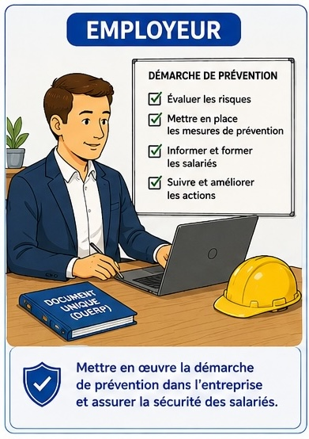
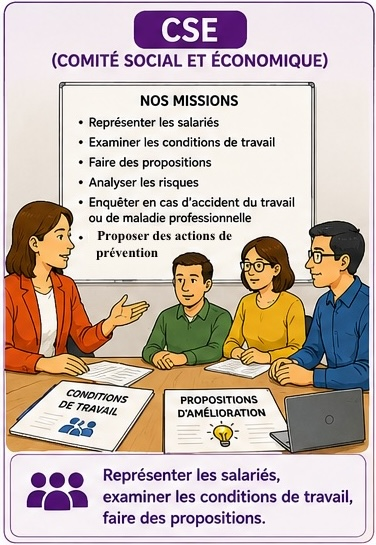
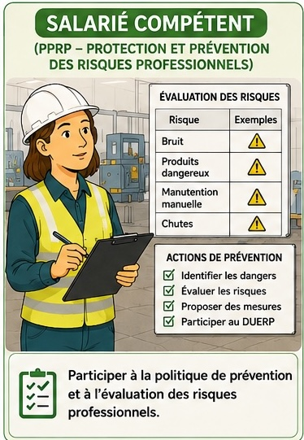
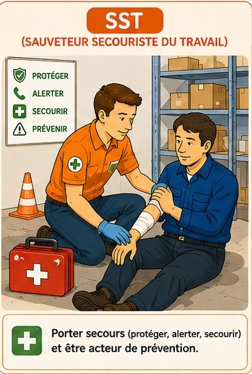
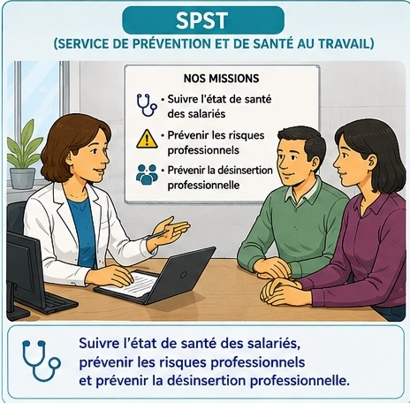
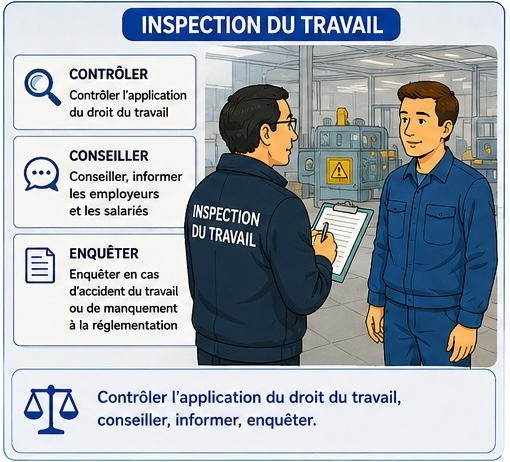
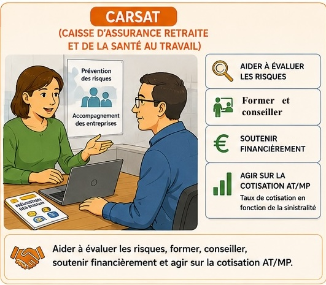

Séance 1 — Les acteurs internes de prévention
Compétences travaillées dans cette séance
- C1 Q1 — Repérer le problème posé dans la situation.
- C1 Q2 — Relever les éléments de la situation (QQOQCP).
- C3 Q3 — Distinguer l'employeur des autres acteurs.
- C1 Q4 — Mettre en relation chaque acteur interne avec sa mission (à partir du Doc. B).
- C3 Q5 — Expliquer le rôle particulier du SST en cas d'accident.
Situation — Léa, apprentie en restauration
Léa, 17 ans, est apprentie en restauration dans la brasserie « La Marmite ». Un midi, elle glisse sur un sol mouillé non signalé en cuisine. Elle se fait mal au poignet mais reste au travail. Elle remarque que ce sol est souvent glissant et que personne n'en parle. Sa tutrice lui dit : « ce n'est rien, tu t'y habitueras ». Léa se demande à qui s'adresser pour faire évoluer la situation.
| Question | Votre réponse |
|---|---|
| Qui ? | |
| Où ? | |
| Quoi ? (le fait) | |
| Pourquoi ? (cause) |
Où : Cuisine de la brasserie « La Marmite ».
Quoi : Chute sur sol mouillé non signalé, douleur au poignet.
Pourquoi : Le sol est régulièrement glissant et le risque n'est pas signalé ni pris en charge.
Doc. A — L'employeur dans la démarche de prévention

Selon l'article L. 4121-1 du Code du travail, le chef d'entreprise (employeur) est responsable de la santé et de la sécurité physique et mentale des salariés. Il doit mettre en place une démarche de prévention :
- Évaluer les risques (rédaction du DUERP) ;
- Mettre en place des mesures de prévention ;
- Informer et former les salariés ;
- Suivre et améliorer les actions engagées.
L'employeur ne fait pas tout seul : il s'appuie sur 4 « acteurs internes » (qu'il désigne ou que la loi impose) et peut faire appel à 2 organismes externes.
| Énoncé | L'employeur seul / Les acteurs internes / Les deux |
|---|---|
| Mettre en place la démarche de prévention dans l'entreprise. | |
| Évaluer les risques et participer à la rédaction du DUERP. | |
| Intervenir en cas d'accident. |
Évaluer les risques et DUERP : Les deux (l'employeur s'appuie sur le salarié compétent).
Intervenir en cas d'accident : Les acteurs internes (en particulier le SST).
Doc. B — Les 4 acteurs internes




| Mission | Acteur interne |
|---|---|
| Représenter les salariés et examiner les conditions de travail. | |
| Réaliser la visite médicale et suivre la santé du salarié. | |
| Participer à la rédaction du DUERP. | |
| Intervenir immédiatement en cas d'accident dans l'atelier. |
Visite médicale et suivi santé : SPST.
DUERP : Salarié compétent.
Intervenir en cas d'accident : SST.
🧠 Je retiens l'essentiel — Séance 1
L'employeur
L'employeur est responsable de la santé et de la sécurité des salariés (Code du travail). Il met en place la démarche de prévention : évaluer, mettre en place, informer, suivre.
Les 4 acteurs internes
- CSE (Comité Social et Économique) — représente les salariés, examine les conditions de travail.
- Salarié compétent — participe à l'évaluation des risques et au DUERP.
- SST (Sauveteur Secouriste du Travail) — protège, alerte, secourt en cas d'accident.
- SPST (Service de Prévention et de Santé au Travail) — suit la santé des salariés.
QCM Que signifie CSE ?
V/F L'employeur est juridiquement responsable de la santé-sécurité de ses salariés.
QCM Le SST sert à :
V/F Le Salarié compétent est désigné par l'employeur.
QCM Qui réalise la visite médicale du salarié ?
V/F Le DUERP est rédigé par les salariés sans la direction.
QCM Le CSE est obligatoire dans toute entreprise d'au moins :
Réponse courte Que signifie le sigle DUERP ?
Séance 2 — Les organismes externes et le bon interlocuteur
Compétences travaillées dans cette séance
- C1 Q1 — Énumérer les missions des organismes externes.
- C1 Q2 — Classer les 6 acteurs en internes / externes.
- C4 Q3 — Proposer l'acteur à solliciter dans une situation donnée.
- C4 Q4 — Proposer un parcours pour la situation de Léa.
- C5 Q5 — Justifier le choix du CSE pour Léa.
- C6 Q6 — Rédiger un message de signalement au CSE.
Doc. C — Les 2 organismes externes de prévention


2 — Conseiller employeurs et salariés.
3 — Enquêter en cas d'accident du travail ou de manquement.
| Acteurs INTERNES (4) | Acteurs EXTERNES (2) |
|---|---|
Externes : Inspection du travail, CARSAT.
Doc. D — Quatre situations professionnelles
- A. Un salarié se coupe gravement avec un couteau en cuisine. Saignement abondant.
- B. Les salariés de la cuisine veulent collectivement signaler que les températures y sont insupportables l'été.
- C. Un salarié soupçonne que ses heures supplémentaires ne sont pas correctement payées.
- D. L'entreprise souhaite acheter une hotte plus performante pour réduire le bruit et demande une aide financière.
| Situation | Acteur à solliciter |
|---|---|
| A — Coupure grave en cuisine | |
| B — Chaleur excessive signalée collectivement | |
| C — Heures supplémentaires non payées | |
| D — Aide pour acheter une hotte |
B : CSE (représente les salariés, examine les conditions de travail).
C : Inspection du travail (contrôle du droit du travail).
D : CARSAT (aides financières à la prévention).
Étape 2 : Si pas de réponse, elle saisit le CSE qui portera le problème collectivement.
Étape 3 : En dernier recours, elle peut alerter l'Inspection du travail (manquement à l'obligation de sécurité de l'employeur).
Je souhaite signaler une situation dangereuse en cuisine de la brasserie : le sol y est régulièrement mouillé et non signalé, ce qui crée un risque de chute de plain-pied. Un accident a déjà eu lieu (mon poignet). Pourriez-vous porter ce point en réunion CSE afin de proposer des mesures de prévention (signalisation, sol antidérapant, procédure de nettoyage) ?
Cordialement, Léa, apprentie.
🧠 Je retiens l'essentiel — Séance 2
Les 2 organismes externes
- Inspection du travail — contrôle, conseille, enquête. Service de l'État.
- CARSAT — Caisse d'Assurance Retraite et de la Santé Au Travail. Conseil, formation, aides financières, cotisation AT/MP.
Méthode : qui contacter ?
- Accident immédiat → SST
- Problème collectif dans l'entreprise → CSE
- Visite médicale, santé → SPST
- Non-respect du droit du travail → Inspection du travail
- Aide financière pour la prévention → CARSAT
Principe
On s'adresse d'abord aux acteurs internes (proches), puis aux acteurs externes (poids juridique ou financier). L'employeur reste responsable de l'ensemble de la démarche.
QCM Que signifie CARSAT ?
V/F La CARSAT peut accorder une aide financière à une entreprise pour acheter un matériel de prévention.
QCM L'Inspection du travail est un acteur :
V/F En cas d'accident grave, c'est d'abord l'Inspection du travail qu'il faut appeler sur place.
QCM Que signifie AT/MP ?
V/F L'Inspection du travail a le pouvoir d'enquêter en cas d'accident.
QCM Pour un problème collectif de conditions de travail dans l'entreprise, on saisit en premier :
Réponse courte Cite les trois missions de l'Inspection du travail (un mot par mission).